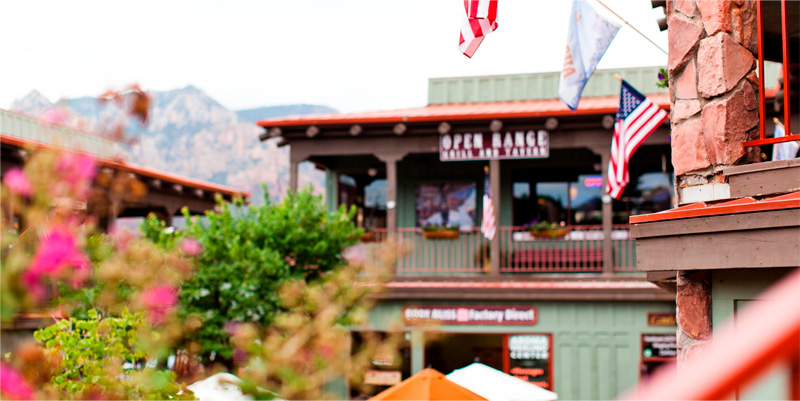

5 преимуществ Седоны
СЕДОНА - НЕБОЛЬШОЙ ГОРОДОК В АРИЗОНЕ,
ЗАСЛУЖИВАЮЩИЙ БОЛЬШЕГО!
РАССМОТРИМ 5 ПРИЧИН, ПО КОТОРЫМ СЕДОНА КРУЧЕ, ЧЕМ ГРАНД КАНЬОН!
НАСТОЯЩИЙ ГОРОДОК
-№1-СЕДОНА - НЕ АТТРАКЦИОН ДЛЯ ТУРИСТОВ,
ТАМ ТЕЧЕТ СВОЯ ЖИЗНЬ

Дополнительные преимущества Седоны
-
ЖИЛЬЕ
РЕКОМЕНДУЕМ ПОЖИТЬ В НАСТОЯЩЕМ
МОТЕЛЕ, ВСЕ КАК В КИНО! -
ЕДА
ВСЕГДА ЗАКАЗЫВАЙТЕ ФИРМЕННЫЙ БУРГЕР,
ВЫ НЕ РАЗОЧАРУЕТЕСЬ! -
СУВЕНИРЫ
НЕ ТОЛЬКО КИТАЙСКОГО, НО И МЕСТНОГО
ПРОИЗВОДСТВА!
ТАМ ЕСТЬ МОСТ ДЪЯВОЛА
-№2-ДА, ПО НЕМУ МОЖНО ПРОЙТИ! ЕСЛИ КОНЕЧНО
ВЫ ОСМЕЛИТЕСЬ
Финальные три преимущества
-
НЕБОЛЬШАЯ ПЛОЩАДЬ
-№3-ВСЕ ДОСТОПРЕМЕЧАТЕЛЬНОСТИ
НАХОДЯТСЯ ОЧЕНЬ БЛИЗКО -
КРАСИВАЯ ДОРОГА
-№4-ЕХАТЬ В СЕДОНУ ИЗ ЛАС-ВЕГАСА СОВСЕМ
НЕ СКУЧНО -
МАЛО ТУРИСТОВ
-№5-БОЛЬШИНСТВО ЕДЕТ В ГРАНД КАНЬОН
И ТОЛПИТСЯ ТАМ
ЗАИНТЕРЕСОВАЛИСЬ?
УКАЖИТЕ ПРЕДПОПЛАГАЕМЫЕ ДАТЫ ПОЕЗДКИ,
И МЫ ПОКАЖЕМ ВАМ ЛУЧШЕЕ ПРЕДЛОЖЕНИЯ ГОСТИНИЦ В СЕДОНЕ